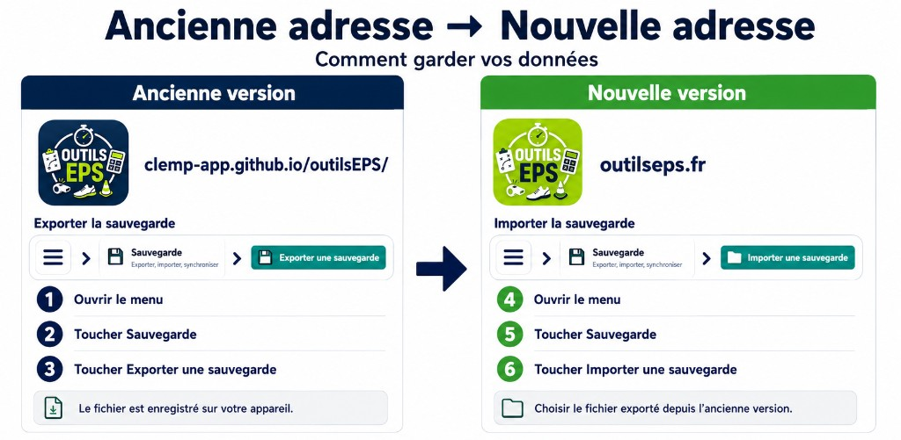
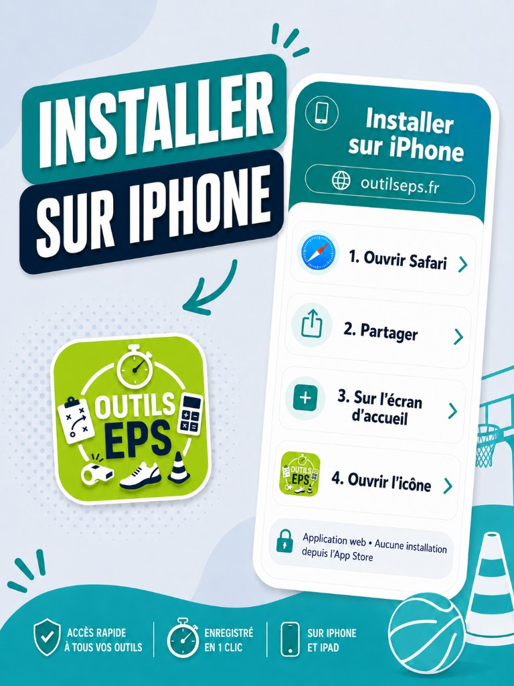
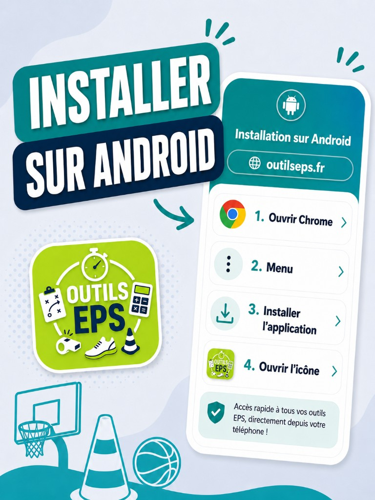

Changement d’adresse
Outils EPS est maintenant sur outilseps.fr
L’ancienne adresse GitHub (clemp-app.github.io/outilsEPS) n’est plus mise à jour. Pour continuer à recevoir les nouveautés, utilisez le site officiel.
Vos données ne basculent pas toutes seules
Classes, élèves, notes et réglages sont enregistrés sur chaque adresse séparément. Si vous avez déjà travaillé sur l’ancienne version, il faut exporter puis importer votre sauvegarde pour les retrouver sur outilseps.fr.
Quelle est votre situation ?
Choisissez votre cas : le guide détaillé s’affiche ci-dessous. Vous pouvez aussi ouvrir directement outilseps.fr.
Première visite
- Ouvrez outilseps.fr dans votre navigateur.
- Utilisez Outils EPS comme d’habitude : aucune manipulation particulière.
- Sur téléphone ou tablette, vous pourrez ajouter l’application web à votre écran d’accueil (voir l’onglet « J’utilise l’application »).
Repère visuel : sur outilseps.fr, l’icône est verte.
Ouvrir outilseps.frTransférer vos données (export → import)
Faites cette manipulation une fois. Vous pouvez encore exporter depuis l’ancienne version en cliquant « Continuer sur l’ancienne version » en haut de page.

Sur l’ancienne adresse
clemp-app.github.io/outilsEPS
- Ouvrir le menu (☰)
- Toucher Sauvegarde
- Toucher Exporter une sauvegarde
Un fichier JSON est enregistré sur votre appareil.
Sur outilseps.fr
outilseps.fr
- Ouvrir outilseps.fr
- Menu (☰) → Sauvegarde
- Importer une sauvegarde
- Choisir le fichier exporté à l’étape précédente
Remplacer l’application sur votre écran d’accueil
Si vous aviez ajouté Outils EPS à l’écran d’accueil depuis l’ancienne adresse, créez une nouvelle icône verte depuis outilseps.fr. Ce n’est pas une application du magasin d’apps : c’est une application web que vous ajoutez au navigateur.
iPhone / iPad

- Ouvrez Safari et allez sur outilseps.fr
- Appuyez sur Partager
- Choisissez Sur l’écran d’accueil
- Ouvrez ensuite l’icône verte Outils EPS
Vous pouvez supprimer l’ancienne icône bleue de l’écran d’accueil.
Android

- Ouvrez Chrome et allez sur outilseps.fr
- Menu (⋮) → Installer l’application ou Ajouter à l’écran d’accueil
- Ouvrez l’icône verte Outils EPS
Si vous aviez des données dans l’ancienne application, exportez-les d’abord (onglet « J’ai des données »).